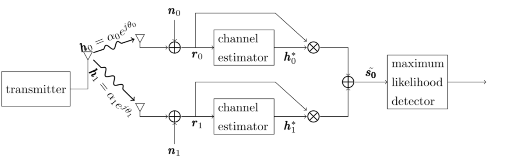
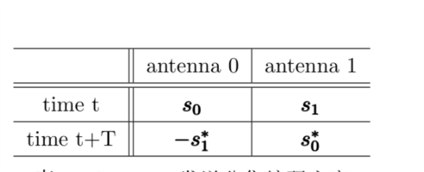

Alamouti分集技术
Alamouti分集技术阐述一种简单的两发射天线分集方案。该方案使用双发射天线和单接收天线，获得采用最大比接收技术的单发射天线双接收天线一样的分集阶数。Alamouti在其论文中证明该方案很容易扩展到双发射天线 \(M\) 接收天线系统，此时可以获得的分集阶数是 \(2M\) 。 这种新的分集方案不需要任何带宽展宽和反馈信息，其计算复杂度和MRRC相似。
天线分集是一种经典的涉及空间维度的分集。该技术在接收端使用多条天线，当信号到达接收机时接收机通过合并技术增强信号。这是一种接收分集技术，因为在接收端要处理多跟天线收集的信号，该技术的缺陷在于终端的成本，尺寸和功耗。因此，接收分集技术基本上都用于基站。在Alamouti提出他的分集方案之前，已经有Tarokh提出了空时编码概念，Tarokh引入了空时Trellis编码。
Alamouti基于现有的无线通信系统（基站有多跟天线，终端有单根天线），提出了一种简单的发送分集方案（发送端有两根天线，接收端有一根天线）。

传统的基于MRRC接收算法的接收分集系统框图如图(1)。图中 \(\mathbf{r}_0 = \mathbf{h}_0\mathbf{s}_0 + \mathbf{n}_0,\mathbf{r}_1 =\mathbf{h}_1\mathbf{s}_1 + \mathbf{n}_1\) ，其中 \(\mathbf{s}_0\) 表示发射信号， \(\mathbf{n}_0,\mathbf{n}_1\) 表示复高斯噪声信号。接收端的最大似然判决准则是：
\begin{equation} \label{eq:d2r0h0si} d^2(\pmb{r}_0,\pmb{h}_0\pmb{s}_i) + d^2(\pmb{r}_1,\pmb{h}_1\pmb{s}_i) \le d^2 (\pmb{r_0},\pmb{h_0s_k}) + d^2 (\pmb{r_1},\pmb{h_1s_k}), \quad \forall \pmb{i}\neq \pmb{k} \end{equation}其中
\begin{equation} d^2(\pmb{x},\pmb{y}) = (\pmb{x}- \pmb{y})(\pmb{x^*}- \pmb{y^*})\label{eq:d2xy} \end{equation}MRRC的合并方案是：
\begin{eqnarray} \tilde{\pmb{s}}_0&=& \pmb{h_0^*r_0} + \pmb{h_1^*r_1} \nonumber \\ &=& \pmb{h_0^*}(\pmb{h_0s_0}+ \pmb{n_0}) +\pmb{h_1^*}(\pmb{h_1s_0}+ \pmb{n_1}) \nonumber \\ &=& (\alpha_0^2 + \alpha_1^2) \pmb{s_0} + \pmb{h_0^*n_0} + \pmb{h_1^*n_1} \end{eqnarray}把上式和~(\ref{eq:d2xy})带入~(\ref{eq:d2r0h0si})得到
\begin{equation} \label{eq:alpha0alpha1} (\alpha_0^2+ \alpha_1^2) |\pmb{s_i}|^2 -\pmb{\tilde{s_0}s_i^*} - \pmb{\tilde{s_0}^*s_i}\le (\alpha_0^2+ \alpha_1^2) |\pmb{s_k}|^2 -\pmb{\tilde{s_0}s_k^*} - \pmb{\tilde{s_0}^*s_k} \quad \forall \pmb{i}\neq \pmb{k} \end{equation}考虑~(\ref{eq:d2xy})，有：
\begin{equation} \label{eq:alpha02plusalpha12} (\alpha_0^2 + \alpha_1^2 -1) |\pmb{s_i}|^2 + d^2 (\pmb{\tilde{s_0}},\pmb{s_i} ) \le (\alpha_0^2 + \alpha_1^2 -1) |\pmb{s_k}|^2 + d^2 (\pmb{\tilde{s_0}},\pmb{s_k} ) \end{equation}对于等幅度调制方式(例如PSK,FSK)有（\textbf{此处我可以考虑QAM的情形}）：
\begin{equation} \label{eq:si2equationsk2} |\pmb{s_i}|^2 = |\pmb{s_k}|^2 =E_s, \quad \forall \pmb{i} \ne \pmb{k} \end{equation}等幅度调制方式情况下，式~(\ref{eq:alpha02plusalpha12})可以简化为：
\begin{equation} \label{eq:d2s0si} d^2(\tilde{\pmb{s_0}},\pmb{s_i}) \le d^2(\tilde{\pmb{s_0}},\pmb{s_k}), \quad \forall \pmb{i}\neq \pmb{k} \end{equation}最大比合并技术生成 \(\pmb{\tilde{s}_0}\) 作为 \(\pmb{s_0}\) 的最大似然估计。
Alamouti发送分集方案框图如图(2)。Alamouti分集方案可以分为三部分：1）发送端的编码，2）接收端合并，3）最大似然判决准则。

Alamouti分集编码方案要求信道在两个连续符号内不变。
\begin{eqnarray} \label{eq:h0th1t} \pmb{h_0}(t) &=& \pmb{h_0}(t+T) = \pmb{h_0}= \alpha_0e^{j\theta_0} \nonumber \\ \pmb{h_1}(t) &=& \pmb{h_1}(t+T) = \pmb{h_1}= \alpha_1e^{j\theta_1} \end{eqnarray}接收到的信号可以表示为
\begin{eqnarray} \label{eq:r0r1} \pmb{r_0} &=& \pmb{r}(t) = \pmb{h_0s_0+ h_1s_1+n_0} \nonumber \\ \pmb{r_1} &=& \pmb{r}(t+T) = \pmb{-h_0s_1^* + h_1s_0^* +n_1} \end{eqnarray}合并方案：图(2)中的combiner生成以下两个信号：
\begin{eqnarray} \pmb{\tilde{s}_0} &=& \pmb{h_0^* r_0} + \pmb{h_1r_1^*} \\ \pmb{\tilde{s}_1} &=& \pmb{h_1^*r_0} -\pmb{h_0r_1^*} \end{eqnarray}需要注意的是该合并方案和之前的合并方案不同，继而有：
\begin{eqnarray} \pmb{\tilde{s}_0} &=& (\alpha_0^2 + \alpha_1^2) \pmb{s_0} + \pmb{h_0^*n_0} + \pmb{h_1n_1^*} \\ \pmb{\tilde{s}_1} &=& (\alpha_0^2 + \alpha_1^2)\pmb{s_1} -\pmb{h_0n_1^*} + \pmb{h_1^*n_0} \end{eqnarray}最大似然判决准则：发送分集的最大似然合并准则和前面提到的接收分集的最大似然准则使用过程一样。
另外，不管发射分集还是接收分集，最后通过combiner生成的信号对于最大似然判决器是等效的。唯一不同在于噪声相位有一个旋转。所以这两者的分集阶数是一样的。